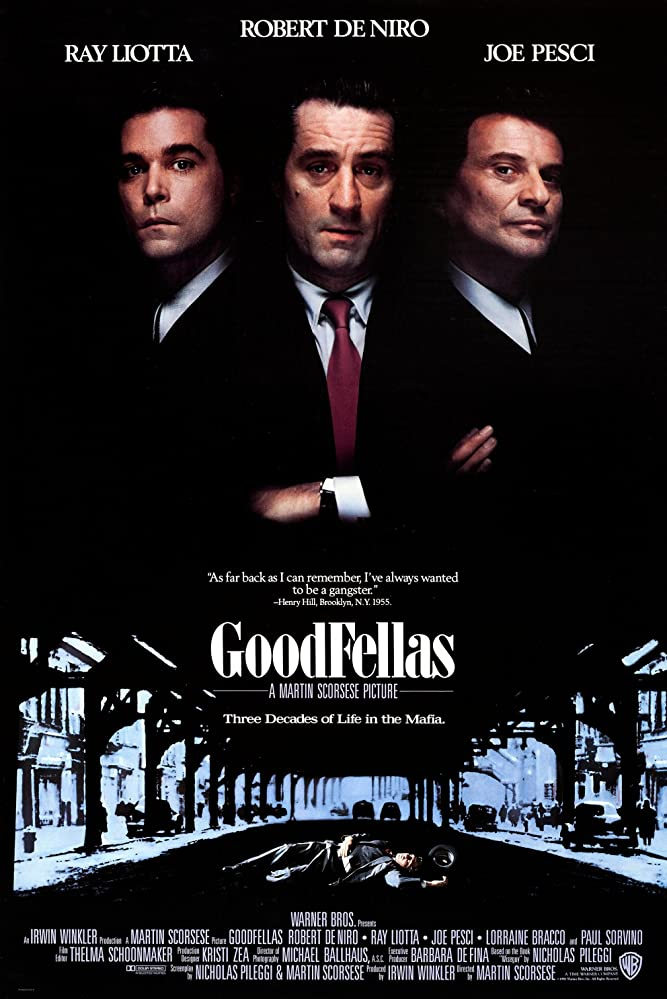

Goodfellas (1990)

Clasificación: R
Duración: 2h26m
Género: Biográfico, Crimen, Drama
Fecha de Lanzamiento: 21/09/1990
Sinopsis: Henry Hill, hijo de padre irlandés y madre
siciliana, vive en Brooklyn y se siente fascinado por la vida que
llevan los gángsters de su barrio, donde la mayoría de los vecinos son
inmigrantes. Paul Cicero, el patriarca de la familia Pauline, es el
protector del barrio.
Dirigido por: Martin Scorsese
Escrito por: Nicholas Pileggi, Martin Scorsese
Elenco: Robert De Niro, Ray Liotta, Joe Pesci, Lorraine
Bracco, Paul Sorvino, Frank Sivero, Tony Darrow, Frank Vincent, ...
IMDB:
8.7/10
Rotten Tomatoes:
96%
Metacritic:
90%
Recomendados
The Untoucha- bles (1987)
Casino (1995)

American Gangster (2007)
The Departed (2006)
Scarface (1983)

Pulp Fiction (1994)